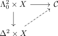
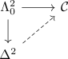

homotopy as equivalence relation for a kan complex
Proposition
Let $K$ be a Kan complex, $X$ a simplicial set and $A \hookrightarrow X$ a simplicial subset Then simplicial homotopy relative $A$ is an equivalence relation on
\begin{align*}
\mathrm{Hom}_{\mathrm{sSet}}(X,K)
\end{align*}
Proof
reflexive
- trivial
transitive
symmetric
it suffices to show that there exists an solution to the

compatible with $A$ (todo)
By reduction of extension problems for a full left adjoint this reduces to

this admits a solution by inner hom of a kan complex as kan complex